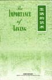

生活的艺术
作者：林语堂

Chapter One THE AWAKENING
Chapter Two VIEWS OF MANKIND
Chapter Three OUR ANIMAL HERITAGE
Chapter Four ON BEING HUMAN
Chapter Five WHO CAN BEST ENJOY LIFE ?
Chapter Six THE FEAST OF LIFE
Chapter Seven THE IMPORTANCE OF LOAFING
Chapter Eight THE ENJOYMENT OF THE HOME
Chapter Nine THE ENJOYMENT OF LIVING
Chapter Ten THE ENJOYMENT OF NATURE
Chapter Eleven THE ENJOYMENT OF TRAVEL
Chapter Twelve THE ENJOYMENT OF CULTURE
Chapter Thirteen RELATIONSHIP TO GOD
Chapter Fourteen THE ART OF THINKING
返回上页